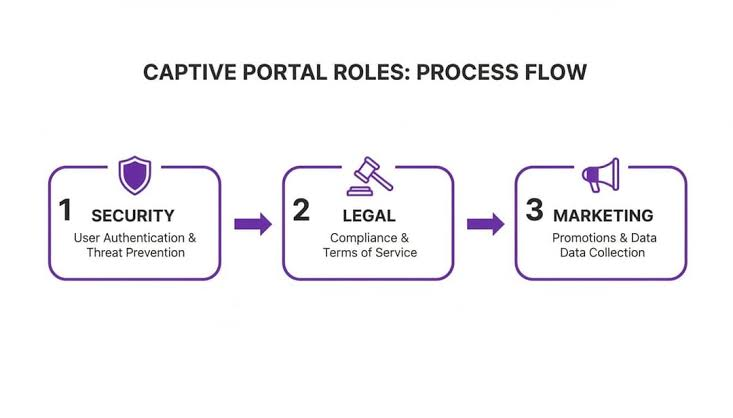

Wi-Fi Pubblico
Il Wi-Fi pubblico è una tipologia di connessione di rete senza fili offerta gratuitamente o a pagamento in luoghi aperti al pubblico, come aeroporti, stazioni ferroviarie, biblioteche, bar, hotel, piazze e campus universitari.
1. Come funziona l'accesso
- Captive Portal Quando ti connetti a una rete Wi-Fi pubblica, solitamente vieni reindirizzato automaticamente a una pagina web di benvenuto (il Captive Portal). Per procedere e iniziare a navigare, viene richiesto di accettare i termini di servizio, inserire un indirizzo email, effettuare il login tramite social o inserire una password fornita dal locale.
- Accesso Aperto (Open): Molti hotspot pubblici non utilizzano alcuna password di crittografia per la connessione iniziale. Questo significa che i dati che invii e ricevi dall'antenna Wi-Fi al tuo dispositivo viaggiano in chiaro, a meno che non si utilizzino protocolli sicuri come l'HTTPS.

.jpg)
2. Le principali tecnologie e standard
- Isolamento dei Client (Client Isolation): È una funzione di sicurezza fondamentale configurata dai gestori di reti pubbliche. Impedisce ai dispositivi connessi alla stessa rete di comunicare direttamente tra loro. In questo modo, un malintenzionato non può sfruttare la rete Wi-Fi condivisa per intrufolarsi nel tuo computer o smartphone.
- OpenRoaming: È uno standard globale moderno che consente agli utenti di connettersi in modo automatico e sicuro alle reti Wi-Fi pubbliche di tutto il mondo (aderenti al programma) senza dover reinserire credenziali o cercare ogni volta una nuova password, sfruttando un'identità digitale fidata e già verificata.
3. Rischi per la sicurezza
- Intercettazione del traffico (Sniffing): Se una rete non è protetta, un utente malintenzionato sulla stessa rete potrebbe teoricamente monitorare il traffico dati non criptato.
- Hotspot falsi ("Evil Twin"): Falsi punti di accesso Wi-Fi creati da malintenzionati con nomi simili a quelli legittimi (es. "Bar_Free_WiFi") per spingere gli utenti a connettersi ed eventualmente sottrarre dati sensibili.
Reti Aziendali
A differenza delle reti domestiche o pubbliche, le reti Wi-Fi aziendali (Corporate Networks) richiedono un'infrastruttura di connettività estremamente robusta, progettata per garantire tre pilastri fondamentali: sicurezza avanzata dei dati, isolamento del traffico e mobilità ininterrotta per i dipendenti. Per proteggere il business da accessi non autorizzati e minacce informatiche, le aziende superano i tradizionali standard domestici adottando protocolli di crittografia rigorosi, suddividendo la rete in canali virtuali dedicati (VLAN) e garantendo un roaming fluido tra i diversi Access Point degli uffici.
- Standard di sicurezza avanzati: Abbandonate le vecchie chiavi condivise (come WPA2-Personal), le aziende adottano il protocollo WPA3-Enterprise o la crittografia a 192 bit, che richiede a ogni dipendente o dispositivo di autenticarsi individualmente con credenziali uniche
- Segmentazione e VLAN: Il traffico di rete viene suddiviso in canali virtuali separati. Ad esempio, esiste una VLAN dedicata ai dipendenti, una per i dispositivi IoT aziendali e una rete "Guest" isolata per i visitatori occasionali.
- Roaming fluido: Grazie a standard come l'802.11r (Fast BSS Transition), i dipendenti possono muoversi liberamente all'interno degli uffici passando da un Access Point all'altro senza subire disconnessioni o interruzioni durante chiamate VoIP o videoconferenze.
L'evoluzione della smart home e l'Internet of Things(IoT):
Negli ultimi anni la Smart Home ha trasformato le nostre abitazioni in ecosistemi interconnessi, dove elettrodomestici, luci e sistemi di sicurezza dialogano in tempo reale per offrire comfort e automazione. Dietro questa comodità c'è l'infrastruttura di rete wireless: grazie all'evoluzione del Wi-Fi 802.11 e alle sue bande (2.4, 5 e 6 GHz), le reti domestiche riescono oggi a gestire decine di dispositivi smart simultaneamente, garantendo una connessione stabile, reattiva e a basso consumo energetico (tramite funzioni avanzate come il Target Wake Time).
- Automazione Domestica: Dispositivi come termostati intelligenti, telecamere di sicurezza in streaming 4K, elettrodomestici connessi e sistemi di illuminazione smart sfruttano le bande a 2.4 GHz (per una maggiore copertura e penetrazione dei muri) e a 5/6 GHz (per evitare interferenze e garantire reattività in tempo reale).
- Efficienza Energetica (IoT): Grazie all'introduzione di tecnologie come il Target Wake Time (TWT) introdotta a partire dal Wi-Fi 6, i dispositivi a batteria della smart home possono pianificare quando risvegliarsi per comunicare con il router, riducendo drasticamente i consumi energetici e prolungando la durata delle batterie.